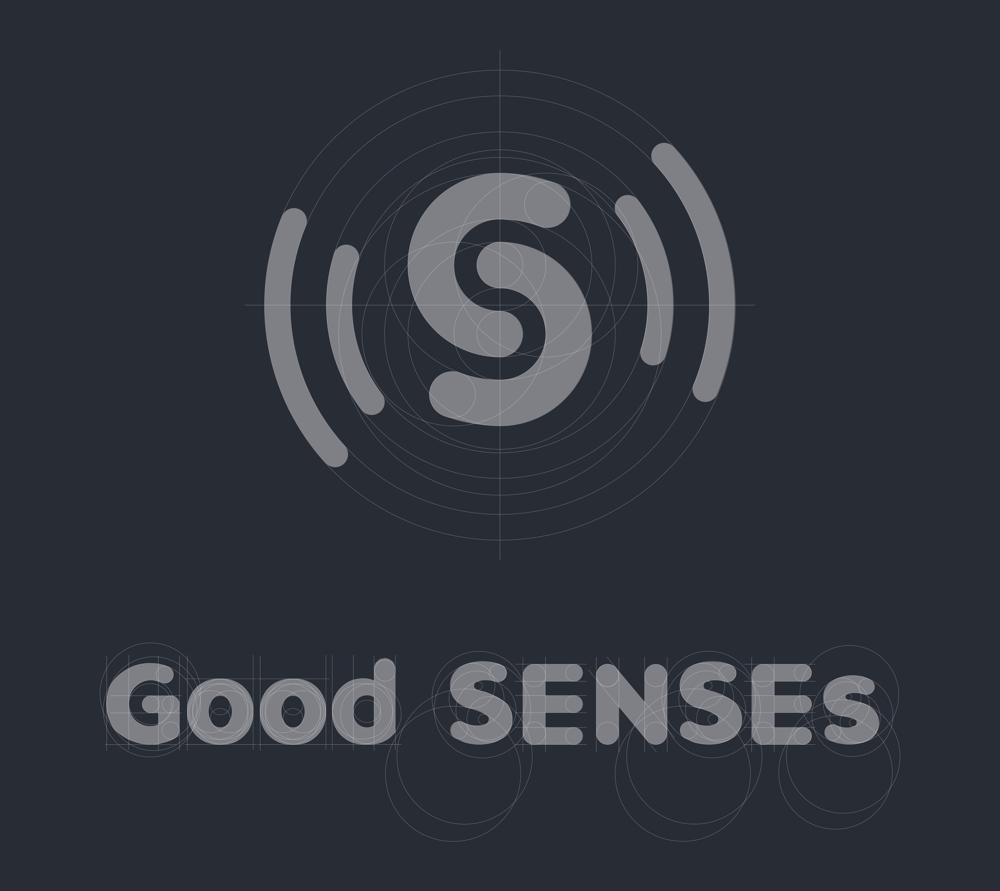
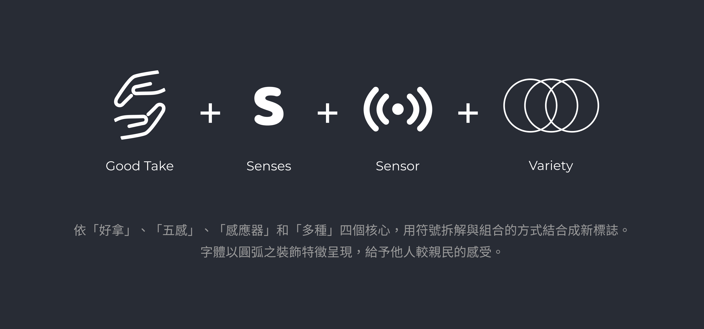
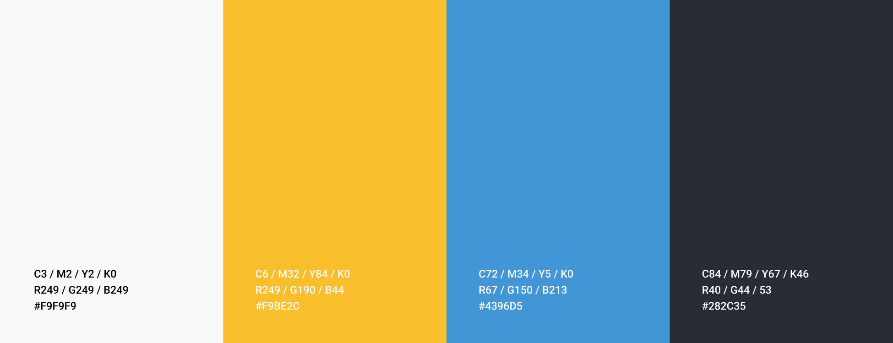
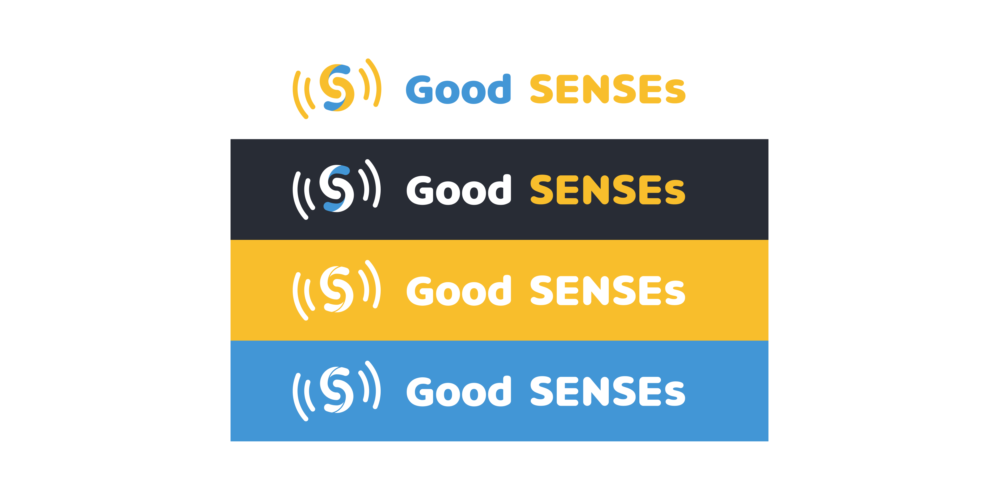

好感智慧商店
Good SENSEs
整合電腦視覺辨識、感應器資訊整合和深度學習技術，提供實體零售商店拿了就走 ( Just Walk Out )的全新購物體驗。其服務情境為消費者掃描手機入店，系統自動追蹤並紀錄消費者在店內取放商品動作，並於手機APP產生購買明細。消費者購物結束前只需確認明細無誤即可透過行動支付離店，無需排隊等待。
Areas of Work :
Branding、Mobile App
Client :
工業技術研究院 ITRI
Date :
Auguest 1, 2018
Role :
Creative Direction、UI Design
標誌設計 Logo Design
「Senses」有理性與感性的意涵，理性包含運用了多種 sensor 感測技術（重量感測器、紅外線感測器和電腦視覺），而感性包含合理的、品味的與識趣的。為強調 Senses，固以大小寫組合呈現。
 視覺識別 Visual Identity
色彩計畫 Color
智慧商店定位屬於民生消費的超商，固選擇使用較活潑黃、科技藍和高級黑組合搭配。
 